C# winform从零开始玩转计算器
一、作品展示
文件夹地址
Github repo \Calculator\bin\Release\net6.0-windows\publish
项目启动文件：
Calculator.exe
或者
通过命令启动Calculator.dll
dotnet Calculator.dll
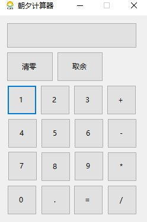
二、.NET平台和C#语言的介绍
C#是一种面向对象的编程语言，主要用于开发可以运行在.NET平台上的应用程序。C#的语言体系都构建在.NET框架上，近几年，C#语言的简单、现代、面向对象和类型安全等特点正在被越来越多的人认同。
C#语言及其特点
C#是微软公司设计的一种编程语言，是从C和C++派生来的一种简单、现代、面向对象和类型安全的编程语言，并且能够与.NET框架完美结合。C#具有以下突出的特点: (1)语法简洁。不允许直接操作内存，去掉了指针操作。 (2)彻底的面向对象设计。C#具有面向对象语言所应有的一切特性:封装、继承和多态。 (3)与Web紧密结合。C#支持绝大多数的Web标准，例如HTML、XML、SOAP等。 (4)强大的安全性机制。可以消除软件开发中常见的错误(如语法错误)，.NET提供的垃圾回收器能够帮助开发者有效地管理内存资源。 (5)兼容性。因为C#遵循.NET的公共语言规范(CLS)，从而保证能够与其他语言开发的组件 兼容。 (6)灵活的版本处理技术。因为C#语言本身内置了版本控制功能，使开发人员更加容易地开发和维护。 (7)完善的错误、异常处理机制。C#提供了完善的错误和异常处理机制，使程序在交付应用时能够更加健壮。
认识.NET Framework/.NET Core
.NET Framework是微软公司推出的完全面向对象的软件开发与运行平台。.NET Framework具有两个主要组件:公共语言运行时(Common Language Runtime, CLR)和类库。
公共语言运行时:公共语言运行时(CLR) 负责管理和执行由.NET编译器编译产生的中间语言代码( .NET程序执行原理如图1.1 所示)。由于共语言运行库的存在，解决了很多传统编译语言的一些致命缺点，如垃圾内存回收、安全性检查等。
类库:类库我们比较好理解，就好比一一个大仓库里装满了工具。类库里有很多现成的类，可以拿来直接使用。例如，文件操作时，可以直接使用类库里的IO类。
.NET Core是适用于 Windows、Linux 和 macOS 的免费、开源托管的计算机软件框架,两者最直接的不同点便是他们的运行环境，.NET Framework只能在Windows环境下运行，但.NET Core是跨平台的
C#的应用领域
游戏软件开发
桌面应用系统开发
智能手机程序开发
Web应用开发
云开发
物联网IOT
人工智能AI
三、创建第一个winform程序
1.下载和安装
vs2022的下载和安装教程
2、选择winform模板（注意是.NET Core）
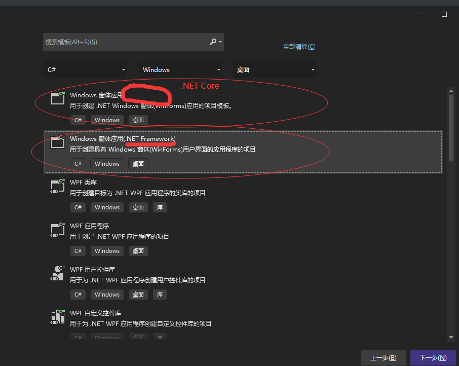
3、配置新项目
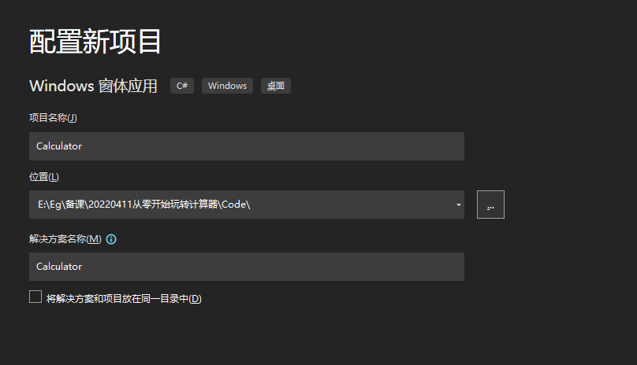
4、选择框架 .NET6.0
5、点击创建出现这个界面就表示创建成功！
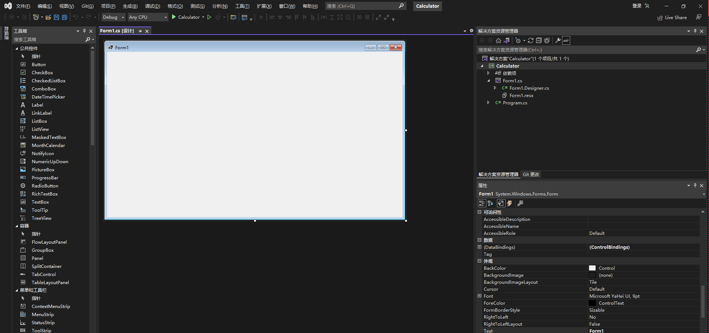
四、项目文件讲解
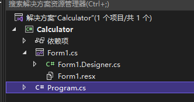
解决方案：一个大文件夹，里面可以包含多个项目
项目：每个程序的名字和功能集合
依赖项：项目引用的各种类库
Form1.cs：窗体界面
Form1.Designer.cs：界面对应的后台设计
Form1.resx：窗体引用的资源文件
Program.cs：程序的入口
五、文件结构讲解
namespace Calculator
{
internal static class Program
{
/// <summary>
/// The main entry point for the application.
/// </summary>
[STAThread]
static void Main()
{
ApplicationConfiguration.Initialize();
Application.Run(new Form1());
}
}
}
命名空间
C#程序是利用命名空间组织起来的。命名空间既用作程序的“内部”组织系统，也用作向“外部”公开的组织系统(即一种向其他程序公开自已拥有的程序元素的方法)。如果要调用某个命名空间中的类或者方法，首先需要使用using指令引入命名空间，using指令将命名空间名所标识的命名空间内的类型成员导入当前编译单元中，从而可以直接使用每个被导入的类型的标识符，而不必加上它们的完全限定名。
C#中的各命名空间就好像是一个存储了不同类型的仓库，而using 指令就好比是一把钥匙， 命名空间的名称就好比仓库的名称，可以通过钥匙打开指定名称的仓库,从而在仓库中获取所需的物品。
类
类是一种数据结构，它可以封装数据成员、函数成员和其他的类。类是创建对象的模板。C#中所有的语句都必须位于类内。因此，类是C#语言的核心和基本构成模块。C#支持自定义类，使用C#编程就是编写自己的类来描述实际需要解决的问题。 类就好比医院的各个部门，如内科、骨科、泌尿科、眼科等，在各科室中都有自己的工作方法，相当于在类中定义的变量、方法等。如果要救治车祸重伤的病人，仅一一个部门是不行的，可能要内科、骨科、脑科等多个部门一起治疗才行，这时可以让这几个部门临时组成-一个小组， 对病人进行治疗，这个小组就相当于类的继承，也就是该小组可以动用这几个部门中的所有资源和设备。
Main()方法
Main()方法是程序的入口点，C#程序中必须包含一一个Main(方法，在该方法中可以创建对象和调用其他方法，一一个C#程序中只能有一个Main()方法，并且在C#中所有的Main()方法都必须是静态的。 C#是一种面向对象的编程语言，即使是程序的启动入口点，它也是一个类的成员。由于程序启动时还没有创建类的对象，因此，必须将入口点Main()方法定义为静态方法，使它可以不依赖于类的实例对象而执行。 Main()方法就相当于汽车的电瓶，在生产汽车时，将各个零件进行组装，相当于程序的编写。当汽车组装完成后，就要检测汽车是否可用，如果想启动汽车，就必须通过电瓶来启动汽车的各个部件，如发动机、车灯等，电瓶就相当于启动汽车的入口点。
标识符
可以简单理解为一个名字，用来标识类名、变量名、方法名、数组名、文件名的有效字符序列
关键字
是C#语言中已经被赋予特定意义的一些单词，不可以把这些单词当作标识符来使用
在我们的vs中，蓝色表示该单词是我们的关键字
语句
语句是构造所有C#程序的基本单位。语句可以声明局部变量或常数、调用方法、创建对象或将值赋给变量、属性、字段，通常以分号终止。
注释
对某行或者某段代码进行说明，方便对代码进行理解与维护。
六、注释的使用
在我们的vs中，绿色表示该单词是我们的注释
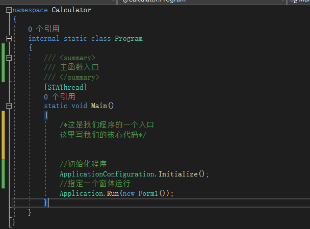
单行注释
//初始化程序
多行注释
/*这是我们程序的一个入口 这里写我们的核心代码*/
文档注释
///
/// 主函数入口 ///
七、变量和数据类型
int 整数类型
int number=10;
float 单精度浮点型
float f =3.5f;
double 双精度浮点型
double d =3.1415;
char 字符类型
char c ='a';
string 字符串类型
string str="abcdefg";
bool 布尔类型
bool b =true;
...
小作业：手动写一遍各个数据类型的变量，并且输出。
八、常量的使用
const
const int number=10;
九、运算符（加减乘除取余）
加+
两数相加
减-
两数相减
乘*
两数相乘
除/
两数相除
取余%
获取余数
++ --
自身加1 自身减1
前++ 后++ 前-- 后--
单独使用无差异，和表达式配合使用，前++，先给变量加1，再进行运算，后++，先用变量的值进行运算，再加1
+= -= *= /=
十、比较运算符（大于小余等于不等于）
大于 小于 > < >= <= == !=
一个等号是赋值，两个是等号是判断
十一、表达式
什么是表达式：各种数据类型的变量+运算符的组合
十二、隐式转换
直接转换，自动的、隐式的转换，不需要做别的操作，就完成了转换
| 源类型 | 目标类型 |
|---|---|
| sbyte | short、int、long、float、double、decimal |
| byte | short 、ushort、 int 、uint、 long、 ulong、 float、 double、 decimal |
| short | int、 float、 long、 double、 decimal |
| ushort | int、 uint、 long、 ulong、 float、 double、 decimal |
| int | long、 float、 double、 decimal |
| uint | long、 ulong、 float、 double、 decimal |
| char | ushort、 int、 uint、 long、 ulong、 float、 double、 decimal |
| float | double |
| ulong | float、 double、 decimal |
| long | float、 double、 decimal |
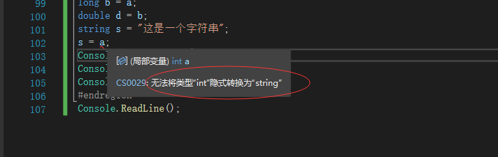
不能隐式转换的，vs会有智能提示，这个时候是无法编译项目的。
十三、显式转换
不能直接转换的，要通过方法来进行转换
| 源类型 | 目标类型 |
|---|---|
| sbyte | byte、 ushort、 uint、 ulong、 char |
| byte | sbyte、 char |
| short | sbyte 、byte、 ushort 、uint 、ulong 、char |
| ushort | sbyte 、byte、 short、 char |
| int | sbyte、byte、 short、 ushort、 uint、 ulong、 char |
| uint | sbyte、byte、 short、 ushort、int、char |
| char | sbyte、byte、 short |
| float | sbyte、byte、 short、 ushort、int、uint 、long 、ulong 、char 、decimal |
| ulong | sbyte、byte、 short、 ushort、int、uint 、long 、char |
| long | sbyte、byte、 short、 ushort、int、uint 、ulong 、char |
| double | sbyte、byte、 short、 ushort、int、uint 、ulong 、long、float、char、decimal |
| decimal | sbyte、byte、 short、 ushort、int、uint 、ulong 、long、float、char、double |
十四、分支结构if-else
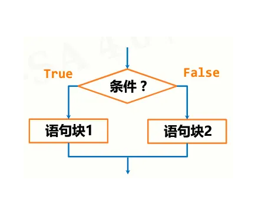
if
if(判断条件){
需要执行的代码;
}
if-else
if(判断条件){
需要执行的代码;
}
else{
需要执行的代码;
}
if---- else if ----else
if(判断条件){
需要执行的代码;
}
else if(判断条件){
}
else{
需要执行的代码;
}
程序执行到 if 处，首先判断 if 所带的小括号中的判断条件是否成立，如果成立，就回一个 true，则执行 if 所带的大括号中的代码，执行完毕后，跳出 if-else 结构；如果不成立，返回一个 false，则跳过 if 语句后的大括号，执行 else 所带的大括号中的代码，执行完毕后，跳出 if-else 结构。
十五、分支结构switch
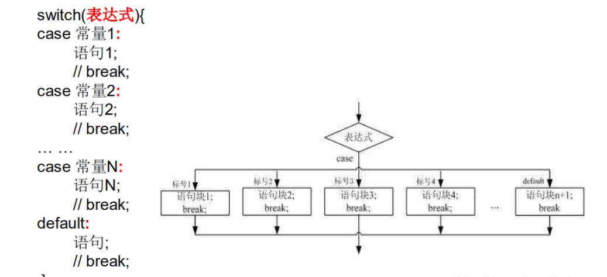
switch(结合enum)
switch（变量或者表达式的值）
{
case 值 1：
要执行的代码；
break；
case 值 2：
要执行的代码；
break；
...
case 值 N：
要执行的代码；
break；
default：
要执行的代码；
break；
}
练习
用switch做一个星期的判断
十六、循环结构-for
for
for（初始表达式；条件表达式；增量表达式）
{
循环体代码；
}
for(int i = 0;i<10,i++){
}
初始表达式：声明循环变量，记录循环的次数；[ int i = 1 ] 条件表达式：循环的条件；[ i<=10 ] 增量表达式：改变循环条件的代码，使循环代码终有一天不再成立；[ i++ ]
小作业：从0到100，循环输出每个数字
十七、循环结构-while
while
while（循环条件）
{
循环体；
}
首先判断 while 所带的小括号内的循环条件是否成立， 如果成立的话，也就是返回 true，则执行循环体； 执行完一遍循环体后，再次回到循环条件进行判断，如果依然成立，则继续执行循环体，如果不成立，则跳出 while 循环。
十八、循环结构-do-while
do-whlie
do
{
循环体；
}while（循环条件）
首先会执行 do 中的循环体，执行完毕后，去判断 do-while 的循环条件， 如果成立则继续执行 do 中的循环体，如果不成立，则跳出 do-while 的循环体。 循环体中的代码最少会执行一次。
先斩后奏
十九、break和continue
break
作用：立刻结束当前循环（不再进行这个循环）。
continue
作用：立刻结束本次循环（进行下一次循环）。
for (int i = 0; i < 10; i++)
{
if (i == 5)
{
//break;//跳出并结束循环
//continue;//跳过然后进入下一次循环
}
Console.WriteLine(i);
}
二十、数组、集合
概念：数组是一个存储相同类型元素的固定大小的顺序集合。
作用：一次性存储多个相同类型的变量。
//定义一个数组，然后初始化数组的元素
int[] arr = new int[] { 1, 2, 3, 4, 5 };
////取数组第一个元素
//Console.WriteLine(arr[0]);
for (int i = 0; i < arr.Length; i++)
{
Console.WriteLine("当前的索引是：");
Console.WriteLine(i);
Console.WriteLine("对应数组里面的元素是：");
Console.WriteLine(arr[i]);
}
二一、遍历
foreach（数组数据类型 临时变量 in 数组名）
{
Console.WriteLine(临时变量);
}
int[] arr = new int[] { 1, 2, 3, 4, 5 };
foreach (int item in arr)
{
Console.WriteLine(item);
}
二二、函数及其基本语法
函数的概念
一段特定功能的代码，有自己的名字，通过名字可以重复调用这段代码来帮我们完成特定的事情。
函数的声明(语法)
static 返回值类型 函数名（[形式参数]）
{
函数代码体；
}
static int Test(int a)
{
//执行一段计算逻辑
a+=1;
return a;
}
int b=1;
int result = Test(b)//调用这个函数得到的结果是2
形参：
形式参数，在定义函数的时候，在参数列表中定义的参数。
实参：
实际参数，在调用函数的时候，传递给函数的具体参数。
返回值
关键字 return
①在函数中返回要返回的值；
②立即结束函数；
二三、Label控件的使用
控件的名称和文案
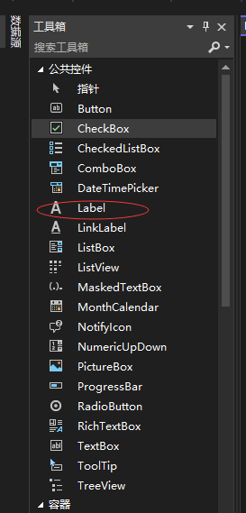
按住鼠标左键，从工具箱拖动控件到我们的窗体设计页面上
通过右键属性，我们可以修改控件的文案（Text）和名称（Name）
二四、Button控件的使用
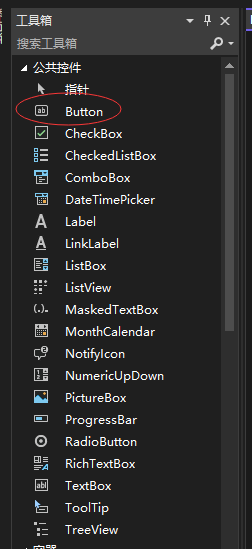
按住鼠标左键，从工具箱拖动控件到我们的窗体设计页面上
通过右键属性，我们可以修改控件的文案（Text）和名称（Name）
二五、计算器页面的布局
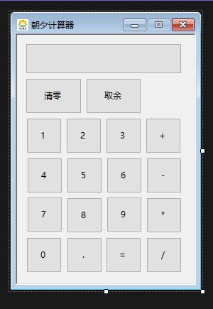
需要删除控件的时候，选中按住delete进行删除即可
二六、窗体属性的设置
启动后居中：StartPostion=CenterParent
禁止放大：MaximizeBox=false
二七、代码层面查看属性以及修改属性
Form1.Designer.cs
this.Surplus.Location = new System.Drawing.Point(97, 61);
this.Surplus.Name = "Surplus";
this.Surplus.Size = new System.Drawing.Size(78, 50);
this.Surplus.TabIndex = 21;
this.Surplus.Text = "取余";
this.Surplus.UseVisualStyleBackColor = true;
this.Surplus.Click += new System.EventHandler(this.Surplus_Click);
二八、控件的点击事件
什么是事件，如何添加事件。双击控件，生成事件
二九、通过事件来触发一些操作，比如修改label的值
在事件中，给控件赋值
label1.Text = "张三";
三十、定义一个变量，记录每次点击按钮的值
分析当前环境， 定义合适的变量类型
public static string GlobalExpression = "";
GlobalExpression += "8"; Expression.Text = GlobalExpression;
三一、定义追加表达式的公共方法，传参以及调用
/// <summary>
/// 追加表达式
/// </summary>
/// <param name="num"></param>
public void AppendNumber(string num)
{
//全局表达式变量累计赋值
GlobalExpression += num;
Expression.Text = GlobalExpression;
}
三二、通过if-else，判断输入的是数字还是计算符号
//判断输入的是不是数字或者小数点
string vaildStr = ".,0,1,2,3,4,5,6,7,8,9";
//IndexOf返回当前字符在字符串中的位置（索引）
if (vaildStr.IndexOf(num) > -1)
{
//索引大大于-1表示存在，说明是数字
}
else
{
//说明是符号
}
三三、字符串的追加操作
GlobalExpression += num;
三四、字符串的为空判断，以及多种方式
//如果默认没有输入数字，点击加减乘除则不走解析逻辑
if (GlobalExpression != "")
{
//不为空的时候走解析逻辑
}
//通过string自带的函数来判断字符串是否为空字符串或者null
if (!string.IsNullOrEmpty(GlobalExpression))
{
//不为空的时候走解析逻辑
}
三五、取最后一位字符，并判断是否存在
1+1 + 2+
1++
Substring函数
Substring（截取的开始位置，截取长度）
string lastStr = GlobalExpression.Substring(GlobalExpression.Length - 1, 1);
三六、定义运算方法，入参，和返回结果
/// <summary>
/// 运算
/// </summary>
/// <param name="num"></param>
/// <returns></returns>
public string Operation(string num)
{
//运算逻辑
return GlobalExpression;
}
三七、通过if-else-if，判断是什么符号
1+1、1-1、 1*1 、 1/1 、1%1
if (GlobalExpression.Contains("+"))
{
//加法
}
else if (GlobalExpression.Contains("-"))
{
//减法
}
else if (GlobalExpression.Contains("*"))
{
//乘法
}
else if (GlobalExpression.Contains("/"))
{
//除法
}
else if (GlobalExpression.Contains("%"))
{
//取余
}
三八、字符串的切割以及字符串数组的讲解
string[] temps = GlobalExpression.Split(new char[] { '+' }, StringSplitOptions.RemoveEmptyEntries);
//举个栗子
string[] temps = new string[]{"张三","李四","王五","赵六","田七"}
string[] temps = new string[]{"1","1"}
string[] temps = new string[]{"2","3"}
三九、取值，以及类型转换和赋值
//加法
//通过Split方法切割字符串，得到一个字符串数组
string[] temps = GlobalExpression.Split(new char[] { '+' }, StringSplitOptions.RemoveEmptyEntries);
//如果是字符串1+字符串1，得到的将会是11，只有数值类型相加才会执行数学计算
GlobalExpression = (Convert.ToDecimal(temps[0]) + Convert.ToDecimal(temps[1])).ToString();
四十、优化之方法的提炼
/// <summary>
/// 子方法
/// </summary>
/// <param name="Symbol">+-*/%</param>
public void OperationTool(char Symbol)
{
if (GlobalExpression.Contains(Symbol))
{
string[] temps = GlobalExpression.Split(new char[] { Symbol }, StringSplitOptions.RemoveEmptyEntries);
if (temps.Length > 1)
{
switch (Symbol)
{
case '+':
GlobalExpression = (Convert.ToDecimal(temps[0]) + Convert.ToDecimal(temps[1])).ToString();
break;
case '-':
GlobalExpression = (Convert.ToDecimal(temps[0]) - Convert.ToDecimal(temps[1])).ToString();
break;
case '*':
GlobalExpression = (Convert.ToDecimal(temps[0]) * Convert.ToDecimal(temps[1])).ToString();
break;
case '/':
GlobalExpression = (Convert.ToDecimal(temps[0]) / Convert.ToDecimal(temps[1])).ToString();
break;
case '%':
GlobalExpression = (Convert.ToDecimal(temps[0]) % Convert.ToDecimal(temps[1])).ToString();
break;
}
}
}
}
四十一、写在最后，细节的完善
//清零+图标和窗体的文案